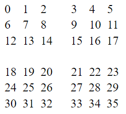

Link to webpage: https://cal-cs184-student.github.io/sp22-project-webpages-RupaDuggirala/proj1/index.html
Overview
Through this project, we have been able to implement several features: triangle rasterization, 2D matrix transformations with homogeneous coordinates and interpolation through barycentric coordinates. To tackle aliasing, we also completed the addition of three techniques: supersampling, pixel sampling and level sampling. The latter two are specifically for texture mapping. With the staff skeleton code, we are now able to use triangles to render graphics, such as the iconic lion image. The triangles are not limited by just using solid colors – we can interpolate linearly to create gradients as well! We can also upload custom images as textures to fill those triangles, which may result in interesting, warped images such as that of the blackhole Berkeley logo. And of course, our favorite robot man can now be just a little bit more expressive given the completed transformations.
Overall, a big takeaway is to never underestimate the chaos of floating point accuracy in calculations. We also had some issues with equality signs here and there, as well as being careful about directionality especially since the downward positive y-axis can be somewhat confusing at first. Debugging was somewhat difficult at the beginning, since the output image is not exactly the most revealing of the underlying issue. Eventually, we settled into a workflow of always checking: 1) integer/float casting, 2) equality signs, 3) whether x/y or u/v or width/height have been swapped. It was also immensely helpful to troubleshoot with black pixels to see where sampling issues might lie, especially for later tasks that call multiple functions. We would also like to think we got just good enough to identify small hints in glitchy images that point to where issues might lie. What at first looked random eventually gave us clues as to what edge cases we might have overlooked. This sort of graphical intuition is probably one of the biggest takeaways from this project, since it relies on a certain degree of understanding of the mechanics behind rendering and its related techniques.
Task 1
In order to rasterize a triangle, we checked to see if the points were given in clockwise or counter-clockwise order, and swapped the core xi and yi vertices if so, to ensure that the triangle would be rendered irrespective of the order. To avoid looping through the entire frame, we set lower and upper bounds for the x and y-coordinates based on the input vertices. For each vertex within the bounding “box” of the triangle, we added 0.5 to its value to represent the center of the pixel, and calculated the three line equations (one for each edge) as such: (-(center_x - x0) * (y1 - y0)) + ((center_y - y0) * (x1 - x0)). If the output of any of these equations was 0, that indicated that the pixel was on the edge and therefore could be filled in with the fill_pixel() function. If the output of all of these equations was greater than 0, that indicated that the pixel was located inside of the triangle and therefore could also be filled.
Our algorithm does not check each sample within the overall frame; instead, it checks each sample within the bounding “box” of the triangle. The three input vertices that are passed into the function signify the lower and upper bounds of the coordinates that make up the triangle. We calculated the minimum and maximum values of these x- and y-values, and chose to loop over this range exclusively. Given that only the inside and edges of each triangle should be rasterized, it made sense to only loop through the range of the triangle’s coordinates in order to determine which pixels should be filled. As a result, the runtime of our algorithm can be determined by these bounds – it takes much less time to compute than one which would loop through the entire frame, and it is computationally equivalent to one that checks each sample within the bounding “box” of the triangle.
Here are two screenshots, with the most interesting components of the image zoomed in.


Task 2
We used the given sample_buffer and resized it to width x height x sample_rate in order to contain all the necessary points for sampling. What we did was to use four loops: the outer two are similar to task 1, where we simply iterated through all the integer coordinates. The inner two loops can be thought of as the number of steps we are taking within each pixel in order to get a sample. We defined a few variables to help us, such as the number of samples on each side (square root of the sample rate), the boundary of one sample (1 / the # of samples), and the size of the step we are taking (½ of the boundary of one sample). The sample_buffer indexing was accomplished by calculating how x, y, the small x (the # of steps taken so far in the x direction) and the small y (the # of steps taken so far in the y direction) contribute to the index.
index = sampley * width * samplesononeside + samplex; where sampley = y * samplesononeside + smally and samplex = x * samplesononeside + smallx.
To illustrate, for a sample rate of nine of an image that has four pixels, the order in which they appear in the sample_buffer is as shown below:
The main modification we had to make was how we’re filling out the sample_buffer. The above explanation covers how the rasterized triangle is accounted for. As for points and lines, we modified the indexing of the sample_buffer in fill_pixel such that it fits the new schematic. We also made changes such that the points and lines are “sampled” for their solid colors for all n samples, where n is the sample_rate.
Of course, we also have to convert what we have in the sample_buffer into the actual framebuffer. To do this, we just took averages one after another as we iterated through all the samples for a pixel. The loop logic was the same as the one used to fill the sample_buffer in the first place. After obtaining the averaged out Color object, we then took each component and converted it to the 8-bit value by multiplying it by 255. Then, we populated the framebuffer with these converted values.
Another adjustment was that whenever the frame was resized or the sample rate readjusted, we also had to call clear_buffers() to ensure that everything is rendered correctly.
Supersampling is useful because it allows us to get more natural looking images that do not have as many jaggies by smoothing / blurring sharp edges. This is achieved by taking the average of multiple sampled points for a pixel, rather than only sampling one midpoint. We get a more accurate representation of "how much" of the pixel lies in the triangle, and can represent that information by the average. In our case, the triangles that have long narrow sides can be considered as high frequency change, which is susceptible to aliasing. Without supersampling, these edges are almost arbitrarily filled in (or not) since it only depends on the middle of the pixel. However, with supersampling, we get a better idea of how the edge is actually dividing the samples in the pixel, which in turn results in a better looking image that renders the edges more smoothly.
This can be seen in the pictures below, where the edges have varying opacities to more accurately depict the "true edge". One will observe that the blurriness increases with the number of samples, as there are increasingly more levels of intensity that can be averaged out to, which smoothens the rapid transition in our eyes and reduces jaggies.
To demonstrate the effect of supersampling, here is the same location of a triangle at a sample rate at 1, 4, and 16 samples per pixel:
Sample Rate: 1 per pixel.

Sample Rate: 4 per pixel.

Sample Rate: 16 per pixel.

Task 3
Here, we lengthened cubeman’s legs a little bit by scaling to give him extra speed so he can run quickly to his friend (you!) that he is currently waving at. The wave was achieved by rotating both arms and adjusting the translations accordingly to make sure that his arms still connect to this body. In this way, we tested all three of our transformations out.

Task 4
Barycentric coordinates provide a way to linearly interpolate the position of any point located on a triangle utilizing just three normalized scalars, so long as it is associated with the vertices or edges of that triangle, or is inside it. It can be thought of as using proportional areas to calculate how much of each vertex's associated value contributes to the final value at the coordinate of interest. This is done by drawing lines from the coordinate to each vertex, and the area opposite of the vertex represents the amount (or sub-area) that that vertex "contributes" to the overall area -- the smaller that triangle is, the further said vertex is from the coordinate of interest, which therefore makes sense that it would thus contribute proportionally less. All three values can then be used to calculate the final interpolated value.
To illustrate the implementation of barycentric coordinates, here is a triangle – each of these three vertices are a different color (pink, green, or blue); but in the output, all of the colors are smoothly blended together to form a gradient that spans the entire surface. In this triangle, we can visualize how the barycentric coordinates are not only used to compute the position of a point in a triangle using its vertices, but to also interpolate vertex data (such as color) across the triangle’s surface. Relative to shading, the normal of the triangle is defined per each vertex and is used in linear interpolation in order to simulate a smooth “3D” shading across the triangle’s surface, even if the triangle itself is “2D” mathematically.

Here is a screenshot of another implementation which utilizes the same logic, albeit on a much larger scale. In this example, barycentric coordinates are utilized to render an entire color wheel. Once again, all of the colors are blended smoothly to form a gradient across the entire surface of the circle.

Task 5
Overall, sampling a pixel involves taking a measurement of each pixel at a specific position. In pixel sampling, we first need to use barycentric interpolation to obtain the texture coordinates (u,v). This can be done because we are given the coordinate mappings for all three vertices. Then, after getting the texture coordinates, we can sample the texel depending on what the mode specified was.
For nearest neighbor, we are simply rounding our texture coordinates to the nearest integer and sampling that texel. This produces a more 8-bit feel to the graphics rendered, and the edges are crisp and clear without smoothening.
For bilinear, we are taking the nearest four texels and lerping accordingly in order to find the average color that we should be filling in our pixel of interest with. We followed the discussion in lecture and deconstructed the math to consist of three 1D lerps: two horizontal, then one vertical. Since lerping takes into account the distances from our "real" texture coordinate to the actual points we are sampling from, we get a weighted balance of all the information, resulting in a smoother, blurrier image that looks less sharp than nearest neighbor sampling.
Here are screenshots to demonstrate the difference between nearest and bilinear sampling, each sampled at 1 and 16 samples per pixel.
Nearest Sampling; Sample Rate: 1 per pixel.

Nearest Sampling; Sample Rate: 16 per pixel.

Bilinear Sampling; Sample Rate: 1 per pixel.

Bilinear Sampling; Sample Rate: 16 per pixel.

These images demonstrate the difference between the two sampling methods. When only 1 sample per pixel is taken, the image that is rendered through nearest sampling contains more white pixels, and those that are filled in are more distinct in color. Overall, this composes the strongest sharpened effect amongst all 4 images. If the image is rendered through bilinear sampling (still sampled at 1 sample per pixel) instead, the image contains fewer white pixels. A larger percentage of the image pixels are filled in, albeit in duller hues. This makes the image appear as though it’s been blurred overall. When 16 samples per pixel are taken, the image that is rendered through nearest sampling is similar to the bilinear sample utilizing 1 pixel – both images contain a mix of white and shaded-in pixels. The hues of the colored pixels are definitely dull relative to the overall color gradient, making the image look somewhat blurred. Finally, if the image is rendered through bilinear sampling (still sampled at 16 samples per pixel), this effect is magnified. There are even fewer white pixels, and even more shaded-in pixels. Overall, this composes the strongest blurred effect amongst all 4 images.
Overall, utilizing nearest sampling produces a sharper result as it preserves the overall shape of the image, whereas utilizing bilinear sampling produces a smoother result as it checks each pixel at a higher frequency and distorts the original shape of the image. The largest difference between the two sampling methods occurs when the image data is markedly discrete or continuous, as one method will visually render the image better than the other due to these inherent advantages in performance.
An issue that we noticed in this task was that if we zoom out of the screen window a lot, thick white lines render on top of the image. We attempted to debug this issue -- foremost, we set the output of our sample_buffer to always return black pixels, but this still yielded those same white lines. Ultimately, we were able to isolate the issue to be a precision issue with floating points in the built-in inside function. If the center of the pixel is passed into this function, the correct boolean isn't returned. Although we weren't able to fix this issue entirely, we wanted to write this note to acknowledge the steps we took in an attempt to debug.
Task 6
Level sampling works by generating a mipmap – that is, levels of different resolution that are meant to depict the texture in question. So a higher level will have lower resolution, as there are less pixels to represent details. The essential idea in level sampling is that we don’t always default to the 1:1 pixel to texel mapping, because in reality there will occasionally arise the need to minify. So instead, we will adjust the “texture” we are sampling from by making different levels of detail available. In our texture mapping scenario, we first try to find the appropriate level by calculating how much u and v changes when x and y changes. In other words, we are calculating the differentials du/dx, du/dy, dv/dx and dv/dy. Then, we try to find the pixel direction that is experiencing the most rapid change – since that axis is more likely to alias. To do so, we calculate the overall change experienced on either the x or y axis: sqrt((du/dx)^2 + (dv/dx)^2) vs sqrt((du/dy)^2 + (dv/dy)^2.
We then take log base 2 of whichever side that experiences more changes. This is done because each level of the mipmap decrements by powers of 2, so we can get a close approximation of how many texels one pixel will “represent” and access the desired level accordingly. Of course, which level and how we sample these levels matter, and the options of level zero (default), nearest and linear dictate the decision-making process. In level zero, we always sample from mipmap level 0, which assumes a 1:1 pixel to texel correspondence. Pictures may look more jagged, and when the minification is drastic, one may start seeing other artifacts such as moire. For nearest, the idea is similar to pixel sampling in that we are defaulting to sampling the nearest level. Since the log base 2 computation that we conducted above doesn’t necessarily return an integer, and mipmap levels are always integers, we can round to the nearest integer and sample that level’s pixels as described in part 5. Finally, for linear, we will be rounding the computed value both up and down to get the two nearest mipmap levels, then linearly interpolate between them. The offset used in lerping will be the difference between the computed level and either of the integers. In our case, we defaulted to always using the distance between the computed level and its floored value.
Now, to analyze the speed, memory usage and antialiasing power tradeoffs in pixel sampling, level sampling and number of samples per pixel. Supersampling (which is, increasing the number of samples per pixel) allows us to antialias better the more samples we take. Of course, the ideal number of samples to take depends on the frequency of change of your graphic of interest, but in general the following trends still apply: we will see a marked increase in memory usage, it will take a little more computational time (so slower speed), but we will see a smoother, less artifact-ridden image. It is indeed possible to save space and not resize the sample_buffer dynamically, but the tradeoff is that you will have to make constant accesses to the framebuffer as you will need to update each pixel as soon as you compute its samples. Alternatively, you could also do a running average in each sample_buffer pixel, but the engineering trade off is that you will be interleaving memory accesses with averaging computations, which is not a big deal if we are just figuring out whether a pixel is in a triangle or not, but can get unwieldy when we start doing trilinear interpolation for each pixel. Rather, it may be wiser to group all the sampling together, and leave all the averaging till when we resolve to the framebuffer, which would require the sample_buffer to dynamically resize according to our needs.
In terms of pixel sampling, nearest neighbor does not consume much memory or computational power, as we are only computing barycentric coordinates then interpolating uv coordinates, and then rounding that value to its nearest texel for sampling. However, linear sampling will increase the computational power needed since we are now conducting 3 lerps for 4 sampled texels for every pixel. The number of memory accesses increase, but the memory usage should still be constant since sampling the 4 texels still only return one value for the sample_buffer to store, and does not require any resizing of the buffer. There are certainly ways of implementation that might increase memory usage, but we chose not to at the expense of interleaving memory access and computation. We see marked improvement in anti-aliasing when it comes to using bilinear as opposed to nearest neighbor, and this is expected because we are using more samples to inform our sample (more of this is discussed in part 5).
Finally, for level sampling, in order to store all the mipmap levels, there will be slight memory overhead since we are not only storing the level 0 (1:1) texture anymore. However, this is not too significant and usually won’t be problematic. In terms of speed, nearest level sampling might end up slightly slower than a level zero default sampling. There are extra steps such as computing differentials and taking logs for every pixel. The computations are a little more complicated for linear as well, since now we will have to sample two levels of the mipmap, then conduct a lerp to get the final color. This is more pronounced if we choose trilinear sampling (linear pixel sampling + linear level sampling), as well will have to perform a total of 3+3+1 lerps. However, in the end, all level sampling should still retain a linear complexity with respect to the size of the frame. We noticed blurrier / less aliased images for non-level-zero default level sampling, so nearest/linear both definitely help prevent aliasing. It should be noted that if we choose to supersample on top of trilinear interpolation (or even just bilinear), that’s when we start seeing slower renderings and maybe even memory issues.
To demonstrate these added functionalities, here are a few screenshots:
L_ZERO and P_NEAREST:

L_ZERO and P_LINEAR:

L_NEAREST and P_NEAREST:

L_NEAREST and P_LINEAR:

Writeup Link
https://cal-cs184-student.github.io/sp22-project-webpages-RupaDuggirala/proj1/index.html